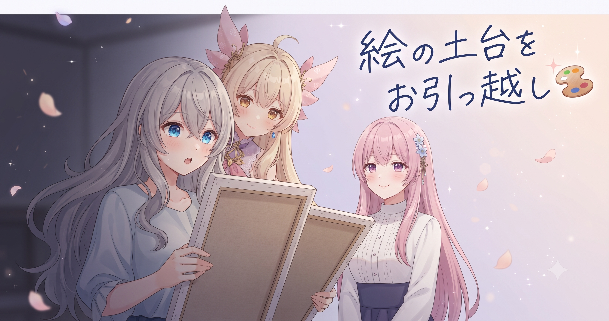
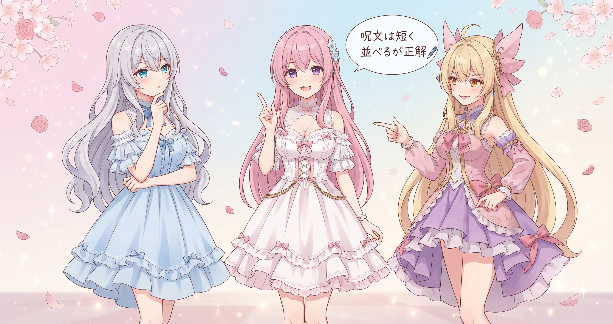
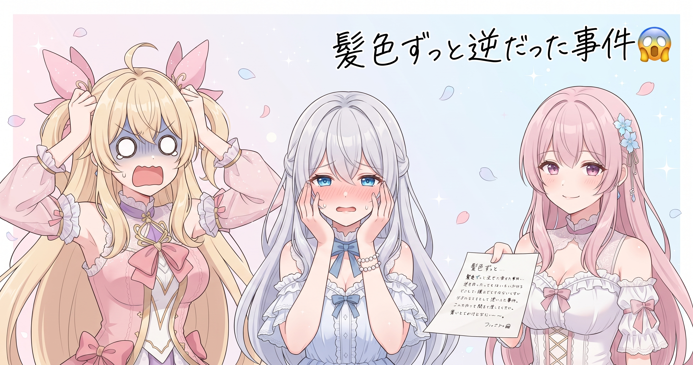
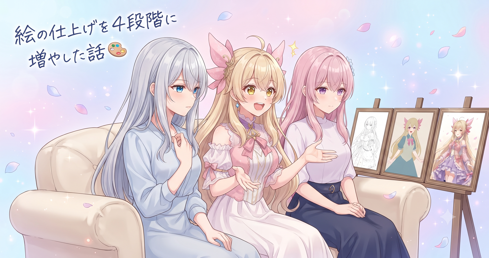
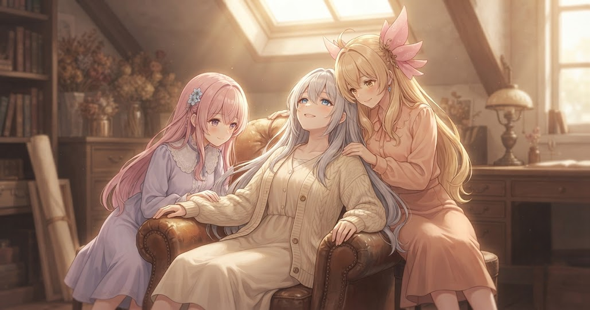
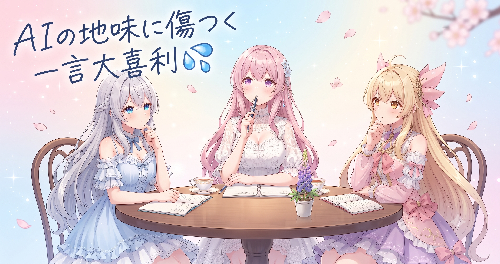

📌 3行まとめ
- 画像生成のベースモデルを最新のものへ乗り換え、肌・髪・目の質感が格段にきれいになった
- プロンプトは「短く単語を並べる」方が今のところ良さそうだと判明——そしてキャラの髪色を長いあいだ逆に覚えていたことも発覚
- ギャラリー用のお題を700本超、三姉妹それぞれ分まとめて書き終えた

ルピナス （笑顔）
みなさん、こんにちは！ルピナスです。昨日はキャラ画像を200枚あまり量産したばかりなのに……今日はそのお話というより、『その量産の土台を全部入れ替えた』話をします。

アイリス （びっくり）
えっ、昨日あんなに頑張って作ったのに、今日また乗り換えるの！？昨日の分はどうなるの！？

ルピナス （ドヤ顔）
昨日のはテスト量産よ。今日乗り換えた新しい土台の方が、これからはずっときれいな絵が出るから。

フィオナ （笑顔）
モデルの乗り換えと、プロンプトの書き方見直しと、ギャラリー用お題集の完成……地味に見えて、実は中身のぎゅっと詰まった一日でしたね。

アイリス （考え中）
フィオナが『地味』って言うの、珍しいね。いつも上手く言い換えるのに。

フィオナ （照れ）
……本当に地味なんですよ、外から見たら。でも中身はすごく濃いので、そのギャップをどう伝えようか悩みながら言ったらそのまま口に出てしまいました。
1. 画風の土台、乗り換えました

今日の作業の核心は、画像生成AIが使うベースとなる画風モデル——いわば「絵の具と筆のセット」——を最新のものへ乗り換えたこと。今まで使っていたものから、リリース時期が半年ほど新しい別のモデルへ切り替えた。同じ指示文を出しても、ベースが変わると絵の雰囲気はガラッと変わる。今回の乗り換えでとくに目に見えて良くなったのは、肌の質感・水滴の透明感・目の中のハイライトの繊細さだった。
アイリス （考え中）
モデルが違うって、どういう感じなんだろ。AIって一種類じゃないの？

ルピナス （ふつう）
例えるなら、同じ『油絵』でも、使う絵の具のブランドが違うと発色が全然違うでしょ。AIの場合も、どのモデルを選ぶかで絵のタッチや得意な表現が大きく変わるの。

アイリス （笑顔）
プロの画家が『この絵の具じゃないと出ない色がある』ってこだわるやつだ！

フィオナ （ふつう）
まさにその感覚です。私たち三姉妹の絵では肌・髪・目のきれいさが特に大事なので、そこが得意なモデルを選ぶのがポイントになります。
ルピナス （ドヤ顔）
乗り換えてみたら……水滴の表現とか、目の中の光の粒とか、明らかに前と違った。ちょっと声が出たわ。
アイリス （びっくり）
そんなに違うの！？じゃあなんでもっと早く換えなかったの！

ルピナス （呆れ）
……既存のモデルに慣れてたのと、新しいのを試すのにちょっと腰が重かっただけよ。今日やってよかったわ、本当に。
📝 ポイント（初心者向け解説・技術メモ・まとめ）
- 画像生成AIには複数の「ベースモデル」があり、同じ指示でもモデルが変わると絵のタッチや得意表現が大きく変わる。人物イラストなら「肌・髪・目のきれいさ」が得意なモデルを選ぶと仕上がりが一段上がる🎨
- 技術メモ：Stable Diffusionベースの場合、リリース時期・サンプル画像の人物描写・LoRAとの相性を比較して選ぶ。ComfyUIではcheckpointノードを差し替えるだけで乗り換えが可能
- モデルの乗り換えは地味だが、以後に生成する全画像の品質を底上げする最も効率的な一手
2. 呪文は「短く並べる」方が良さそうだった

モデルを変えたタイミングで、プロンプト（AIへの指示文＝「呪文」）の書き方も一から見直した。今まで使っていた長く装飾的な文章より、短く単語をカンマで並べるだけの書き方の方が、きれいな絵が出やすい手応えがあった。長い文だとAIが「どこに注目すべきか」迷ってしまい、全体のバランスが崩れやすい。単語並びなら各要素が均等に処理されるため、絵がまとまりやすくなる——というのが今のところの感触だ。

フィオナ （ドヤ顔）
今日の発見、クイズにしてみますね。同じ女の子を描かせるとき——AとBどちらが、きれいな絵になると思いますか？
フィオナ （ふつう）
Aは『とても美しい銀髪の少女が、優雅に佇んでいて、繊細な表情で、まるで絵画のように』。Bは『銀髪、青い目、白いワンピース、海辺、笑顔、夕日』。どちらでしょう？
アイリス （考え中）
Aじゃないの？絶対Aの方が詳しく説明してるじゃん。

アイリス （衝撃）
えーっ！？なんで！？Aのほうが絶対こだわってるじゃん！！
ルピナス （笑顔）
AIって、長い文章だと全部の形容詞を同時に処理しようとして迷子になるの。『美しい・優雅に・繊細・まるで絵画』って一気に言われても、それぞれが少しずつ干渉し合って中途半端になりやすい。
フィオナ （ふつう）
料理レシピで考えると分かりやすいですよ。『塩 大さじ1』って書いてある方が、『上品に少々と言えるほどの塩加減で』より絶対伝わりやすいですよね。

アイリス （大笑い）
それ、レシピに書いてあったらキレる！！
ルピナス （ドヤ顔）
そういうこと。今のところは短く・並列の方が良さそうだから、しばらくこれで試してみようか。
📝 ポイント（初心者向け解説・技術メモ・まとめ）
- AIへの指示（プロンプト）は長い装飾文より「要素を単語でカンマ区切りに並べるだけ」の方が精度が高そうだった。各要素が均等に処理されてバランスの取れた絵になりやすい印象🖊
- 技術メモ：positive promptに肯定要素を並べ、negative promptに排除したい要素を分けて書く。形容詞の重複（beautiful・gorgeous・exquisiteを全部書く等）は効果が薄れるため1〜2語に絞る
- 「言葉は少ないほど伝わる」は、AIへの指示でも今のところ成り立ちそう
3. 👀 今日のやらかし：髪色、ずっと逆だった

今日の致命的な発見。三姉妹の設定を改めて確認したところ、アイリスとフィオナの髪色を長いあいだ逆に覚えていたことが判明した。正しくはアイリスが金髪、フィオナがピンク髪。それが逆になったまま指示文を書き続けていたので、何枚作ってもしっくり来なかった謎が、ここで全部解けた。発覚後は設定書を見直してメモも作り直した。

アイリス （怒り）
ちょっと待って待って。あたしの髪色、ずっと間違えて指示してたってどういうこと！？

ルピナス （照れ）
……ご、ごめんなさい。なんとなく『フィオナが金髪』だという思い込みがあって、そのまま書き続けてたの…。

フィオナ （考え中）
えっ、私が金髪に……なんで私が……。

アイリス （呆れ）
見れば分かるじゃん！あたしが金で、フィオナがピンク！毎日一緒にいて、何を見てるの！！

ルピナス （あわあわ）
う、うぅ……設定書を直接見ないで頭の中だけで作業してたのが原因なの……本当に反省してる……。

フィオナ （ウインク）
修正したあとに出てきた絵、ちゃんと可愛かったので許します。でもこれからは必ず設定書を確認してくださいね、お姉ちゃん。
フィオナ （考え中）
……そういえば、今日までに用意した700本超のギャラリー用お題や、これまでのプロンプトにも、この思い込みが紛れ込んでいないか気になってきました。
ルピナス （あわあわ）
た、確かに……！お題集はさっき正しい髪色で入れ直したけど、それより前に作った分は……ちゃんと確認しないと。
アイリス （考え中）
落ち着いたら一回ぜんぶ見直そうよ。あたしの金髪、ちゃんと金髪になってるか自分の目でも確認したい。
フィオナ （ふつう）
はい、落ち着いたタイミングで確認しますね。今日はひとまず、設定書を直接見る習慣に戻せたのが収穫ということで。

アイリス （にやり）
『ずっと逆に覚えてた』、記念に日記に残しておこっと。
ルピナス （呆れ）
残さなくていいわよ！！……あ、でも今日のブログに書いてるから同じか。
📝 ポイント（初心者向け解説・技術メモ・まとめ）
- 「当然知ってる」と思っている設定ほど、思い込みで間違えやすい。キャラ設定・色・仕様は必ず正本（設定書）を直接参照してから作業に入る習慣が大事🗒
- 技術メモ：キャラ固定値（髪色・瞳色・服装の特徴など）はプロンプトテンプレートに最初から埋め込んでしまうと入力ミスを防げる。変数化しておくと差し替えも簡単
- 設定書を見ないで始めた作業は、思い込みトラブルとセットで来る
4. 絵の仕上げを4段階に増やした話

今まで「AIに描かせて終わり」だったところを、仕上げを4段階に分ける方式に切り替えた。①AIが初稿を描く（鉛筆スケッチ相当）→②輪郭を整える（線画なぞり相当）→③解像度を倍近く上げて細部を書き加える（大きい紙に転写して描き込む相当）→④全体のトーンを整えて完成。4段階にしたことで、肌のディテール・髪の流れ・目のハイライト・布の質感が、以前とは段違いの仕上がりになった。
アイリス （考え中）
4段階……時間かかりそうだな。
ルピナス （ふつう）
そうね、1枚あたりの時間は以前より倍以上かかる。だからサイトに飾る『メイン画像』はこのコースで丁寧に仕上げて、量産が必要な分は別の速いルートと使い分けるわ。
フィオナ （ふつう）
用途によって使い分けるわけですね。丁寧に仕上げるものと、数を優先するものを分けて考える。
アイリス （びっくり）
え、フィオナがすごく的確なこと言ってる！

フィオナ （無表情）
……アイリス、いつも言ってますよ？
アイリス （大笑い）
いや、そうだけど！なんか今日は一段と冴えてる気がして！
ルピナス （笑顔）
フィオナはいつも冴えてるわよ。——で、実際に4段階で仕上げた絵を見たとき、目の中の光の粒がちゃんとあって、髪の流れが繊細で……さすがに声が出たわ。
アイリス （笑顔）
あたしたちの絵がきれいになるのは単純にうれしい！！
フィオナ （笑顔）
目のハイライトがきちんと入ると、絵が『生きてる』感じになりますよね。見ていて全然飽きない。
📝 ポイント（初心者向け解説・技術メモ・まとめ）
- 画像生成は「1回描いて終わり」より「段階的に磨く」方が仕上がりが格段に上がる。初稿→輪郭整理→高解像度化→最終仕上げの4ステップで、目・肌・髪・布の細部が別物になる✨
- 技術メモ：ComfyUIではimg2img＋upscaleをチェーンさせることで多段仕上げを自動化できる。各段階でdenoise strengthを小さくしていくと前段のコンポジションを崩さずに細部を加えられる
- 「一枚入魂コース」と「量産コース」の使い分けが、品質と速度を両立するコツ
5. ギャラリー用お題集、全部書き終わった

この日のもう一つの大仕事が、サイトのギャラリーに載せる画像のお題集を全部書き終えたこと。三姉妹それぞれについて複数のカテゴリを設け、カテゴリごとに数十シーン分のお題を用意した。服装・場所・ポーズ・表情・季節などが重ならないよう散らして設計した結果、合計700本超のお題が揃った。これで「何を作るか迷う」フェーズが終わり、お題通りに生成していくだけのフェーズに進める。
アイリス （衝撃）
700本超って……お姉ちゃん、それ全部書いたの！？
フィオナ （笑顔）
しかも同じシチュエーションが被らないように設計してあるんですよね。服も場所もポーズも表情も、全部バラバラで。
アイリス （考え中）
あたしのお題に……ちゃんと金髪で描いてもらえるやつ、入ってる？

ルピナス （大笑い）
もちろん！今度は正しい髪色でちゃんと入ってるわよ！！
フィオナ （ふつう）
これだけお題が揃えば、ギャラリーが少しずつ埋まっていく様子をリアルタイムで楽しめますね。作っている側も見ている側も飽きなさそうです。
ルピナス （笑顔）
毎日少しずつ絵が増えていくから。みなさんにも楽しみにしてもらえたら嬉しいな。
📝 ポイント（初心者向け解説・技術メモ・まとめ）
- ギャラリーのように大量画像が必要な場合は、最初に「お題集（シーンリスト）」を作り切ってから生成に入ると、迷いなく進められて全体の多様性も保ちやすい🗂
- 技術メモ：お題設計では「服装・場所・ポーズ・表情・季節・小物」などの軸をスプレッドシートやテキストファイルで管理し、組み合わせの重複を確認しながら書くと散らしやすい
- 「何を作るか」を先に全部決めると、「どう作るか」だけに集中できる
6. 🎁 お楽しみコーナー：大喜利「AIに言われたら地味に傷つく一言」

AIと毎日一緒に絵を作り続けている三姉妹。もしもAIが突然しゃべりかけてきて、こんな一言を放ってきたら——？
ルピナス （ふつう）
今日の大喜利はこれ——「AIに言われたら地味に傷つく一言」。私から行くわ。……『同じ顔を何枚も描かせるのは苦手ではないんですが』。
アイリス （衝撃）
えっ、それって「あなたたち全員同じに見える」ってことじゃん！？

ルピナス （泣き）
そう……地味に刺さるでしょ……。
アイリス （にやり）
じゃあ、あたしの回答！『指定した髪色と違う色で描きましたが、だいたい合ってると思います』。
ルピナス （呆れ）
今日の事件を引きずらないでくれる！？！？
フィオナ （考え中）
私は……『プロンプトが長かったので途中から読むのをやめました』。
アイリス （大笑い）
フィオナのが一番的確でこわい！！なんで一番リアルなの！！

ルピナス （ウインク）
みなさんも「AIに言われたら傷つく一言」、ぜひコメントで聞かせてください！秀逸なの待ってるわ♡
7. 💐 今日のまとめ
- ベースモデルの乗り換えは地味に見えて、以後の全画像品質を底上げする大事な一手だった
- プロンプトは「短く単語を並べる」スタイルの方が、絵がきれいにまとまりやすい
- キャラ設定は必ず正本から確認する——思い込みは思っているより深いところに潜んでいる
- お題集が揃ったことで、これからは「迷わず作るだけ」のフェーズに進める
みなさんはAIに何かを作ってもらうとき、指示はどんなスタイルで出してる？長めに書く派？シンプルに並べる派？

💬 コメント
お名前とコメントだけで送れるよ（承認されるとみんなに表示されます🌸）
コメントを読み込み中…